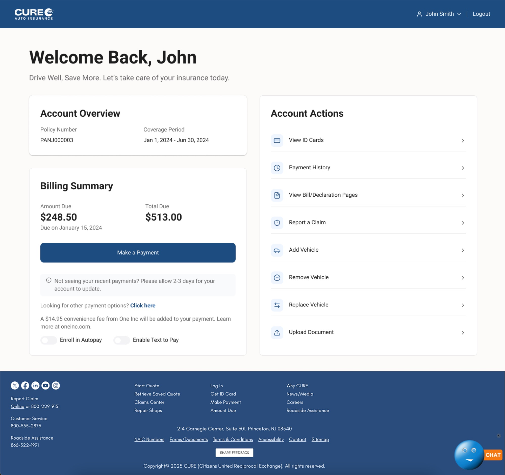

Decision 01
Rebuild the Home screen hierarchy from scratch.
The Home dashboard is what every user sees first, every time. The original version was a two-column layout inside a bordered box — navigation was a raw bullet-point list with no visual hierarchy, no icons, no sense of priority. Users had no way to understand what was most important or what to do first.
The redesigned Home surfaces three things immediately: policy status, upcoming payment, and quick links to the most-used sections. Navigation was restructured to be scannable and predictable. The hierarchy was rebuilt so users can orient themselves instantly — instead of hunting for what they need.

Finding what you need in two taps instead of five isn't flashy. But for someone at a traffic stop, it's everything.— Reflection on the My Account Portal project